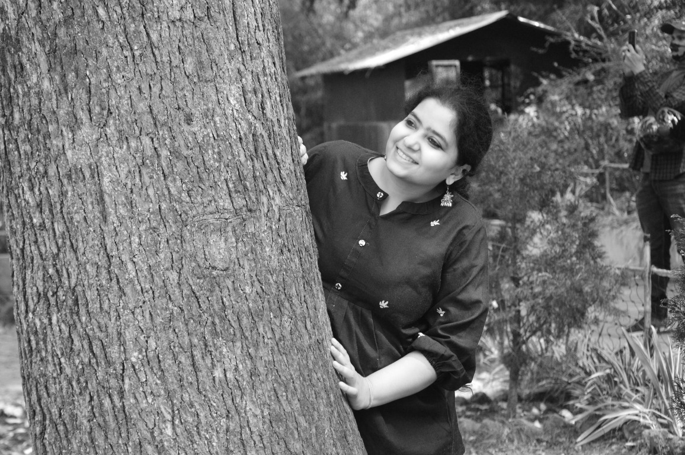
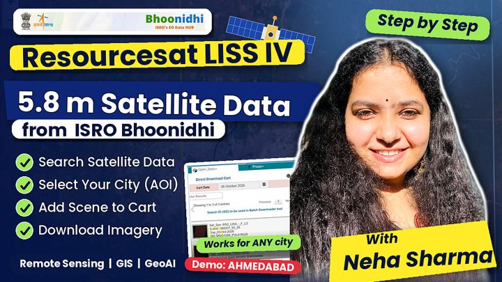
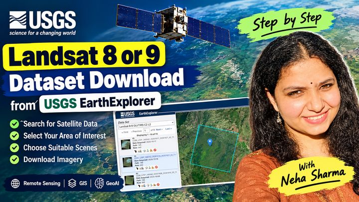
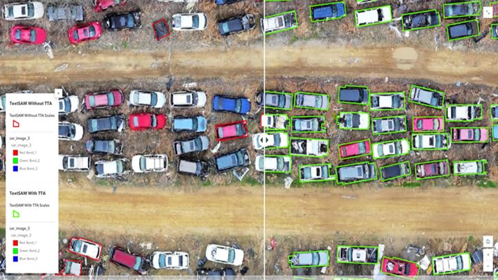

Geospatial deep learning
Object detection, instance and semantic segmentation for satellite and drone imagery using Mask R-CNN, DeepLabv3, YOLOv5, and U-Net.
Making Earth more legible.
Neha Sharma brings GeoAI research closer to real-world decisions, turning Earth observation into actionable insight for cities, infrastructure, and climate. Her work spans geospatial deep learning, multimodal remote sensing, and digital twins through collaborations with MIT CSAIL and the WCRP Digital Earths effort. She also serves as a GeoAI subject matter expert for Bootcamp in GIS, a California-based GIS edtech company.

Profile
Trained across architecture, geomatics, and deep learning, Neha builds geospatial AI that is rigorous enough for research and usable enough for planners. She is a founding member of the GeoAI R&D team at Larsen & Toubro, and spent three years at Esri’s GeoAI R&D Center shipping and quality-assuring pretrained models used across ArcGIS.
Today she works remotely from India with MIT CSAIL on a visual data science platform for multimodal knowledge exploration and human–AI collaboration, and contributes to the WCRP Digital Twins – Beyond Physical Systems Working Group.
The data matters. The living world matters more. Her work keeps people, ecosystems, and local knowledge in view as spatial data becomes insight.
01 · Research focus
Five connected threads, from the pixel-level models to the Earth system frameworks they ultimately serve.
Object detection, instance and semantic segmentation for satellite and drone imagery using Mask R-CNN, DeepLabv3, YOLOv5, and U-Net.
Fusing RGB and SAR for robust building detection and height estimation, using a dataset that spans seven continents.
Connecting human and physical Earth systems for hydroclimate risk, water, agriculture, energy, and urban planning.
Spatio-temporal analysis of pollution and land use with Sentinel-5P, MODIS, and AURA OMI, including a satellite-based air quality index.
Visual data science and multimodal knowledge exploration at MIT CSAIL, plus efficient LLM fine-tuning for low-resource settings.
02 · Selected research
Theses, models, and applied systems across remote sensing, computer vision, GIS, and language models.
Fine-grained classification of 12 roof types, with a unified DeepLabv3 model that detects buildings and estimates height simultaneously from high-resolution satellite imagery.
Springer paperLed a Mask R-CNN pretrained model for localizing ships in high-resolution imagery, trained on an in-house dataset of 70,000 ships built globally from Maxar imagery.
View modelMapped pollution hotspots with AURA OMI, MODIS MAIAC, and Sentinel-5P, including the 2020 lockdown, and built a satellite-based spatial air quality index.
View thesisCompared LoRA, QLoRA, and prefix-tuning against full fine-tuning on FLAN-T5, cutting GPU memory by 65–70% with minimal accuracy loss.
Geo-located objects from drone metadata, ran Mask R-CNN detection on video, and shipped a Flask and Leaflet web app for monitoring sites.
District-level cropping-pattern assessment for the 2018 monsoon, examining crop shifts, surplus, and suitability.
View projectToolkit
03 · Publications
Co-edited book
Co-edited with Dr. Shiv Mohan and Dr. Navneet Munoth, a first-of-its-kind volume bridging remote sensing, GIS, architecture, and planning. Neha also co-authored four chapters in the book. Published with Taylor & Francis (2025), New York, USA.
Discover the bookDarshana Rawal, Sindhu Ranganath, Neha Sharma & Anjana Vyas. The International Archives of the Photogrammetry, Remote Sensing and Spatial Information Sciences, XLIX-B3-2026, 773–781. ISPRS Congress 2026, Canada.
First author. International Conference on Data Science and Emerging Technologies (DaSET 2024), Springer, Singapore.
In Smart Buildings and Cities with Remote Sensing and GIS, CRC Press · Taylor & Francis.
First author. In Smart Buildings and Cities with Remote Sensing and GIS, CRC Press · Taylor & Francis.

MEDIUM · 4 NOV 2026 Download ResourceSat LISS-IV (5.8 m) Satellite Imagery from ISRO’s Bhoonidhi Portal
MEDIUM · 24 OCT 2026 How to Download Landsat 8 & Landsat 9 Satellite Imagery from USGS EarthExplorer
ARCGIS BLOG · 15 MAY 2025 Boosting GeoAI Model Performance with Test Time Augmentation ARCGIS BLOG · 22 DEC 2023 ArcGIS AI Models – Year in ReviewThe complete record is on ORCID and Google Scholar .
04 · Experience
Contributing GeoAI expertise to a hands-on GIS learning programme.
Developing geospatial capabilities on a visual data science platform for multimodal knowledge exploration and human–AI collaboration.
Digital Earths Lighthouse Activity, sponsored by WMO, IOC-UNESCO, and ISC. Advancing Digital Earth and digital twin frameworks that integrate human and physical Earth systems.
Built and maintained ArcGIS pretrained models on Living Atlas, led the Ship Detection (RGB) model, and ran quality assurance for the arcgis.learn module, AutoML, and time-series tools. Authored documentation, story maps, and blogs.
Founding member of the GeoAI R&D team. Delivered biodiversity big-data pipelines on Azure Databricks for S&P Global, drone video analytics, and deep learning for solar, construction, pool, and land-cover detection.
Contributed to an ISRO-SAC urban air quality project (Sentinel-5P, MODIS) and assisted with the M.Tech Geomatics foundation studio.
05 · Teaching & capacity building
Neha has delivered 24 expert and guest sessions across NIT Calicut, SPA Bhopal, CoA-TRC, and SAIARD/NIUA, and has co-organized and taught through the Council of Architecture’s national GAP capacity-building programme.
Faculty for the Centre of Excellence in Urban Planning & Design. Delivered 16 hands-on sessions in 2025 and 5 more in June 2026 on GeoAI for disaster management and digital twins for urban managers.
A national online programme in two levels, from GIS foundations to LULC, UAV, BIM–GIS, and spatial machine learning. Over 200 students and professionals trained.
06 · Recognition
Professional memberships
07 · Education
Liverpool John Moores University
Specialisation in deep learning · DistinctionCEPT University
Remote sensing & GIS · Gold medallistMANIT Bhopal
Designing for people & placeRecent certifications
08 · Journey
From Gwalior and universities in India to online study at Liverpool John Moores University, remote work with MIT in Boston, and GeoAI teaching for a California GIS edtech team.
A PLACE IN THE JOURNEY
Select a point for the place and mode of collaboration.
A PLACE IN THE JOURNEY
Select a numbered point to reveal its story.
09 · Open source
RESEARCHER PROFILE
@neha-sharma-geoaiLoading public profile…
Loading public GitHub metrics…
Counts marked with + reflect publicly visible GitHub activity; private contributions are not included. The daily graph mirrors the public profile calendar through a third-party service (github-contributions-api.jogruber.de).
10 · Collaborate
Neha welcomes research collaborations, GeoAI projects, mentoring, and conversations about how spatial data can serve people and the planet.